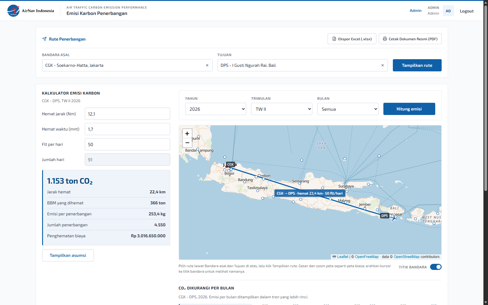
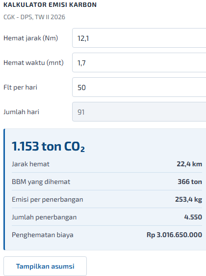
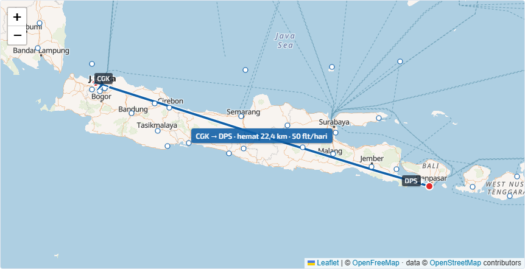
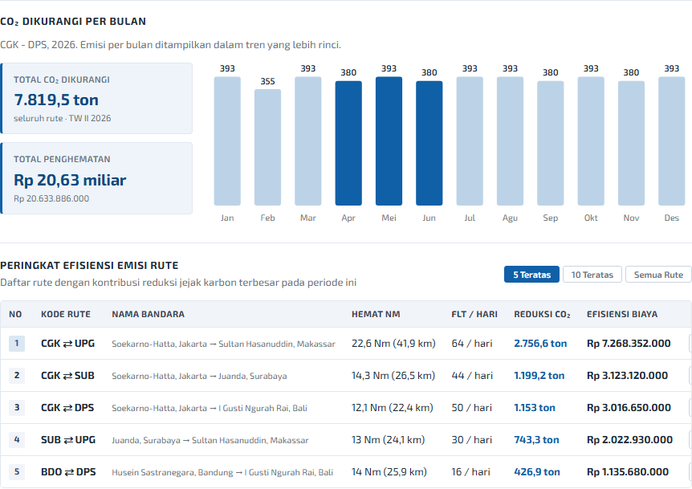

06 Journal
Weekly log
Four weeks of the internship at AirNav Indonesia, written up week by week — what I actually worked on, and what I took from it.
-
Week 01 21–25 September 2026
The first week was about understanding what a professional environment actually looks like: how the IT division works and what the information-technology and operations administration role at AirNav Indonesia covers. I started on the Carbon Emission website — learning the carbon-emission calculation method with my mentor, putting the formula into the application, and presenting the progress I had made.
What I took from it: a first real experience of web application development, an understanding of why calculation logic has to be exact, and practice at taking feedback and applying it to improve both the interface and the function.
-
Week 02 28 September – 2 October 2026
Going deeper into maintaining and extending the Carbon Emission website: fixing bugs, adjusting the formula to the ICAO Doc 9889 methodology, updating features, and refining the template and interface. I also worked with the other interns on repository management, learned to use the Hermes agent, and started building my personal portfolio site.
What I took from it: a better grasp of the debugging process, applying the correct calculation method, collaborating on shared software, and using AI as a tool that genuinely supports the work rather than replacing it.
-
Week 03 5–9 October 2026
Building features against what users actually need: updating the Carbon Emission website and fixing the PDF export. I also started on SWORD, focused on improving its UI/UX, developing the chatbot, and exploring the AWS configuration the application needs for cloud. Alongside that I studied user authentication, access-rights management, admin features, system activity logging, and application security based on the OWASP Top 10.
What I took from it: application development is not only about the interface — security, data management, infrastructure and how the user actually feels using it matter just as much.
-
Week 04 12–21 October 2026
Running several projects in parallel — continuing the Carbon Emission website, refining the SWORD chatbot and landing page, building the admin pages, learning to work with the local database and GitTea, and updating the personal portfolio site. I also learned to present finished work to Mas Diki, our EVP, and saw why professional communication matters in a project review. A meeting with the operations team about the Carbon Emission dashboard made clear that the application has to follow real user requirements — including a proposal to add CO₂ calculation for the Terminal Maneuvering Area (TMA).
What I took from it: stronger technical ability, cross-team collaboration, problem solving, and a clearer picture of how requirements from operations should shape what gets built.
Progress evidence · 21 Sep – 21 Oct 2026
Carbon Emission dashboard
The dashboard I built for the operations side of AirNav Indonesia answers one question: how much carbon a route actually saves. Pick an origin and a destination and it returns the distance and time saved, the fuel burned, the CO₂ avoided and the cost saving. The map puts that route over Indonesian airspace, and the analysis panel tracks the reduction month by month. Flask on the backend, SQLite locally with PostgreSQL and MySQL supported for deployment, plus Excel and PDF export for the reports the operations team needs.
-

01 Route, calculation and map on one screen One page does the whole job: choose the route, read the result, see it on the map. Switching the origin or destination recalculates without a page reload. -

02 CGK–DPS, quarter II 2026 — 1,153 t CO₂ avoided For Jakarta–Denpasar the app returns 1,153 tonnes of CO₂ avoided, 22.4 km of distance saved, 366 tonnes of fuel saved and 253.4 kg of CO₂ per flight — the figures the operations team reviews. -

03 The route over Indonesian airspace The map draws the selected route on a radar layer, so a number is tied to an actual flight path instead of floating on its own. -

04 Reduction per month The analysis panel aggregates CO₂ reduced per month, which makes the progress reviewable per period rather than one route at a time.